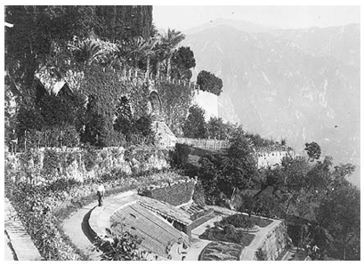

İnsan yürüdüğünde batıya ya da güneye gitmelidir. Kuzeye ya da doğuya gitmek kör noktaya doğru ilerlemektir.
Haçlılar evlerine doyuma ermiş olarak döndüklerinden beri bu böyledir ve Rönesans batı göğünü gelecek için bir kemer olarak görmüştür. Bugün de böyledir. Güneye ve batıya doğru ilerlemeliyiz.
İtalya’dan Fransa’ya yolculuk etmek iç karartıcı ve üzücüdür. Ama güneye, İtalya’ya, güneye ve batıya doğru ilerlemek mutluluk vericidir. Batıya doğru gitme düşüncesinde, –bu Cornwall ya da İrlanda bile olsa– bir çeşit yücelme vardır. Bu, güneybatı ve kuzeydoğunun iki zıt kutup olmaları gibidir. Ruhlarımız için pozitif yön güneş batışında güneybatıdır. İsviçre’den yürürken –burası her ne kadar bir kasvet vadisi olsa da– her adımımın altında ilerlemenin sevinciyle bir ışık yanıp söndü.
İtalyanların yaşadığı vadiden ayrıldığımda pazar sabahıydı. Irmağın üstünden Luzern’e doğru hızlıca yol aldım. Sırtımda eşyalarımla tepelere tırmanmak ve açık havada yürümek güzeldi. Yolun kenarındaki ağaçlar gürdü. Henüz özgür değildim. Bir pazar sabahıydı. Çok sessizdi.
İki saat sonra kabartmalı bir haritadakine benzer tepecikleriyle uçsuz bucaksız yayılmış olan Zürich’in uzun gölü kıyısında, vadiye bakan tepenin üstündeydim. Ona bakmaya katlanamıyordum, çok küçüktü ve gerçek gibi değildi. Sanki her şey yalanmış gibi bir duyguya kapıldım. Her şey sanki ezmek istediğim ve tepesinden baktığım bir kabartmalı haritaydı. Benimle gerçek arasına girmiş gibiydi. Burasının gerçek dünya olduğuna inanamıyordum. Sanki gerçek görüntüyü saklamak için duvara çizilmiş sıkıcı bir manzaraydı; her şey uydurmaydı.
Tepenin öteki tarafına giderek yoluma devam ettim ve oradan da baktım. Orada da dumanlı tepeler ve ayna gibi bir göl vardı. Ama tepeler daha yüksekti: Büyük olan Rigi’ydi. Tepeden aşağıya indim.
Bereketli bir tarla ve birkaç köy vardı. Kilise yukarıdaydı. Kiliseye gidenler evlerine dönüyordu: Yünlü siyah kumaşlar içinde, ellerinde şemsiyeleriyle ve başlarında baca külahına benzer şapkalarıyla erkekler ve çirkin giysiler içinde kitap ve şemsiye taşıyan kadınlar. Sokaklar bu siyah giysili adamlar ve sert kadınlarla donanmıştı; her şey bir pazar günü sessizliğine dönmüştü. Bundan nefret ettim. Bu, bana pazar günleri süründüren bir kramp gibi üstümüze çöken, çocukluğumdan tanıdığım anlamsız, “uygun ve edepli davranış”ı hatırlatır. Anlamsız yüzleriyle evlerindeki pazar akşamı yemeklerine giden siyah kumaşlar içindeki bu yaşlı insanlardan tiksindim. Bu köylerin verdiği duygudan, rahat, zengin, temiz ve edepli oluşlarından tiksindim.
Botlarım iki başparmağımı acıtıyordu. Bu hep olur. Sığ ve geniş bir vadi yatağına, bir bataklığa geldim. Köyden çıktıktan bir buçuk kilometre sonra ırmak kenarındaki taş bir köprüye oturdum, mendilimi yırttım ve başparmaklarımı sardım. Ben parmaklarımı sararken siyah adamlardan iki tanesi kollarının altında şemsiyeleriyle köy yolundan bana doğru yaklaştı.
Beni o kadar kızdırdılar ki botlarımı aceleyle bağlamak zorunda kaldım; onlar bana yaklaşmadan önce ben yeniden yürüyüp gittim. Yürümelerine ve konuşmalarına dayanamıyordum. Unlu ağızlarıyla titreyerek konuşuyorlardı.
Sonra yağmur yağmaya başladı. Minik bir tepeden aşağıya iniyordum. Bir çalının altına oturdum ve dalların uçlarından suların damlamasını izledim. Orada evsiz, yersiz yurtsuz olmaktan, yolun kenarındaki ağaçların altında çömelmekten çok memnundum. O kadar memnundum ki kendimi dünyayı miras alan yumuşak huylu bir insan gibi hissettim.[176] Kimileri paltolarının yakalarını yukarıya kaldırarak gittiler; yağmur onların siyah omuzlarını daha da karartıyordu. Beni görmediler. Bir hayalet olarak güvende ve onlardan uzaktaydım. Zürich’ten aldığım yemeğin geri kalanını yedim ve yağmurun dinmesini bekledim.
O yağışlı pazar öğleden sonrasında dingin ve bitkin insanları, tramvayların geçtiği çirkin yolu geçerek küçük bir göle geldim. Kasaba yakınlarında pazar gününün ağırlığı katlanılmazdı.
Sazlıklı göl kıyısından kıyı boyunca yürüdüm. Çay içmek için su kenarında küçük bir kır evine girdim. İsviçre’de her ev bir kır evidir.
Bu eve, iki yaşlı kadın ve ayaklarını kirletmemesi gereken bir köpek tarafından bakılıyordu. Burada mutlu oldum. Çayın yanında jambon ve çok hoşuma giden ballı keklerden verdiler. İki yaşlı kadın hareketli köpeğin ardından iki kuru yaprak parçası gibi dönerek yerlerinde kıpırdanıyordu.
“Niçin dışarı bırakılmıyor bu köpek?” diye sordum.
“Çünkü dışarısı yağmurlu,” diye yanıtladılar, “sonra öksürüp hapşırıyor.”
“Hem de mendili olmadan. Hiç hoş değil,” dedim.
Bir süre sonra yakınlaştık.
“Avusturyalı mısınız?” diye sordular.
Onlara Graz’lı olduğumu, babamın Graz’da doktor olduğunu ve Avrupa ülkelerini zevk için yürüyerek dolaştığımı söyledim.
Böyle söyledim; çünkü sürekli yürüyen Graz’lı bir doktor[177] tanıyordum. Bu iki kadına karşı bir İngiliz olmak istemedim. Başka bir şey olmak istedim. Birbirimize güvendik.
Bana tuhaf ve eski bir havada ziyaretçilerini –üç hafta boyunca her gün balık tutmaya giden ve hiçbir şey yakalayamadan dönen adamı– ve daha pek çok önemsiz şeyi anlattılar. Sonra bana ölmüş üçüncü kardeşlerinden söz ettiler. İnsan onun boşluğunu hissedebilirdi evde. Ağladılar ve ben, Graz’dan gelen Avusturyalı, gözyaşlarımın masaya aktığını tüm şaşkınlığıma karşın hissettim. Ben de çok üzgündüm ve bu yaşlı kadınları teselli etmek için öpebilirdim.
“Yalnızca cennette hava ılıktır, yağmur yağmaz ve kimse ölmez,” dedim ıslak yapraklara bakarak.
Sonra oradan ayrıldım. Geceyi bu evde geçirebilirdim. Bunu istedim de. Ama Avusturyalı karakterim çok fazla gelişmişti.
Bu yüzden kasabadaki kötü pansiyona gittim. Ertesi gün Luzern’e gitmek için berbat oteliyle iğrenç gözüken Rigi’nin[178] arka tarafına tırmandım. Rigi’de Almanca bilmeyen ve Fransızca konuşan birini bulamadığı için de yolunu yitirmiş, genç bir Fransıza rastladım. Bir taşa oturup konuştuk. Onu Cezayir’deki kışlasında ziyaret edeceğime söz verdim. Napoli’den Cezayir’e gemiyle gidecektim. Adresini kartına yazdı, bölükte benimle tanıştıracağı, bir ya da iki hafta kalırsam birlikte iyi vakit geçireceğimiz arkadaşları vardı.
Cezayir, Rigi’de üzerinde oturduğumuz kayadan, aşağıdaki gölden ve ötedeki dağlardan çok daha gerçekti. Cezayir, orayı hiç görmediğim halde gerçekti ve arkadaşım, kartını kaybettiğim ve adını unuttuğum halde, sonsuza dek benim arkadaşımdı. Askerlik hizmetine başlamadan önce ilk yurtdışı gezisini yapan Lyon’lu bir devlet memuruydu. Bana yolculuk biletini gösterdi. Sonra ayrıldık; çünkü o Rigi’nin tepesine çıkmalıydı, ben de aşağıya inmeliydim.
Luzern ve gölü sütlü çikolatanın sarıldığı kâğıt gibi sinir bozucuydu. Bir gece bile uyuyamadım. Gölde çalışan vapura binip son durakta indim. İyi bir Alman pansiyonu bulup mutlu oldum.
Pansiyonda yüzü güneşten yanmış ve şişmiş, zayıf, genç bir adam vardı. Onu Alman bir turist sandım. Yeni gelmişti. Ekmek yiyip süt içiyordu. İkimiz yemek salonunda yalnızdık. Resimli bir gazeteye bakıyordu.
Göldeki vapurun çalıştığını duyup, karanlıkta kırmızı beyaz ışıklarını yaydığını görünce, “Vapur bütün gece burada duruyor mu?” diye Almanca sordum.
Ekmek ve sütünün üstünden yalnızca başını salladı; kafasını kaldırmadı.
“İngiliz misiniz?” diye sordum.
Yalnızca bir İngiliz, yüzünü bir kâse süt içine gömerdi ve kırmızı kulaklarını acı veren bir şaşkınlıkla sallardı.
“Evet,” dedi, “İngiliz.”
Sonra aniden Londra şivesiyle konuşmaya başladım. Sanki kendimi Londra metrosunda bulmuş gibiydim.
“Ben de öyle,” dedim. “Nereden geldiniz?”
Planlarını açıklayan bir general gibi anlatmaya başladı: Furka Geçidi’nin çevresinden yürümüştü, dört ya da beş gündür yürüyordu. Çılgıncasına yürüyordu. Ne Almanca biliyordu, ne de bu dağlar hakkında herhangi bir şey: Tek başına çıkmıştı yola. On beş günlük bir tatili vardı. Furka’dan Rhone Glacier’e ve sonra Andermatt’tan aşağıya inerek göle gelmişti. Bu son gününde yaklaşık kırk beş kilometre yürümüştü.
“Yorulmadınız mı?” diye heyecanla sordum.
Yorgundu. Güneş ve rüzgâr yüzünde kırmızı bir şişlik yaratmıştı. Yorgunluktan ölmek üzereydi. Son dört günde yüz altmış kilometreden fazla yol almıştı.
“Hoşunuza gitti mi?” diye sordum.
“Evet, böyle yapmak istiyordum.” İstediğini yapmıştı. Ama bunu ne için yapmak istediğini Tanrı bilir. Şimdi Luzern’de geçireceği bir günü, Interlaken ve Bern için de birer günü vardı. Sonra da Londra’ya gidecekti.
Onun için üzüldüm; çok yorgundu ve çok tutkulu.
“Niçin bu kadar çok yürüdünüz?” dedim. “Bir trene binebilirken niçin vadiden aşağıya yürüyerek indiniz? Buna değdi mi?”
“Sanırım evet,” dedi.
Ama aşırı yorgunluktan hasta olmuştu. Gözleri koyulaşmış, görmez olmuştu. Bir kartpostal yazması gerektiğinde sanki kendi yönünü bulur gibi başını ileri attı. Kime yazıldığını görmeyeyim diye kartpostalın arkasını çevirdi; kime yazıldığıyla ilgilenmiyordum, yalnızca onun bu gizlilik konusundaki özeni ve İngiliz tarzındaki hareketi ilgimi çekmişti.
“Ne zaman gidiyorsunuz?” diye sordum.
“İlk vapur kaçta?” dedi ve içinde zaman çizelgesi olan bir rehber çıkardı. Saat yedide ayrılacaktı.
“Niçin bu kadar erken?” diye sordum.
Belirli bir zamanda Luzern’de ve akşam da Interlaken’da olması gerekiyordu.
“Sanırım Londra’ya gidince dinleneceksiniz,” dedim.
Bana soğuk ve uzak bir biçimde baktı.
Bira içiyordum. Onun da bir şey içip içmeyeceğini sordum. Bir süre düşündü, sonra bir bardak sıcak süt daha alacağını söyledi. Pansiyonun sahibi, “Ekmek de ister misiniz?” diye sordu.
İngiliz istemedi. Gerçekten yiyemezdi. Yoksuldu da, parasını idare etmek zorundaydı. Pansiyoncu sütü getirdi ve adamın ne zaman ayrılacağını sordu. Konuşmalarını çevirdim. İngiliz müdahale etmemden biraz rahatsız gibiydi. Kahvaltıda ne yiyeceğini bilmem hoşuna gitmedi.
Onu pençesine almış makineyi hissedebiliyordum. Londra’da bir yılı metroda gidip gelerek, bir odada çalışarak geçirmişti. Sonra iki haftalığına serbest bırakılmıştı. Planlanmış yolculuğuyla, onu idare edecek ve Interlaken’da hediye almasına –onu evine aldığı çanak çömlekle giderken hayal edebiliyorum– yetecek parasıyla İsviçre’ye koşmuştu.
Şaşırtıcı bir yüreklilikle bu tuhaf toprağa ayak basmış, yalnızca İngilizcesi ve sınırlı cüzdanıyla buradaki tuhaf insanları tanımak için gelmişti. Dağların arasından gitmek ve bir buzul geçmek istiyordu. Kendinden geçmiş biri gibi ileriye, durmaksızın ileriye yürümüştü. Adı Excelsior[179] olabilirdi.
Furka’ya varınca yalnızca dağ sırtından yürüdü ve aynı yerden aşağıya indi. Tanrım, bu ruhunu öldürüyordu. İşte yine dağların aşağısındaydı, yolculuğuna yeniden başlıyordu: Vapur ve tren, vapur ve tren ve metro. Yeniden o makinenin içine girene dek.
Gitmesine izin verilmedi, o da bunu biliyordu. Nedeni, kendine işkence edercesine zalim bir yorgunluk, zalim bir cesaret göstermek istemesiydi. Ona Almanca bir soru sorduğumda başını acıyla süt kâsesine eğmiş olan adamın, İngiltere’den yalnız başına, yürüyerek dışarı çıkacağı ilk yolcuğunda böyle bir yürekliliğe niçin ihtiyacı olmasın ki!
Gözleri koyulaşmış ve anlaşılmaz bir yüreklilikle derinleşmişti. Sabaha geri dönüyordu. Geri dönüyordu. Sahip olduğu tüm yüreklilik geri dönmek içindi. Yavaş yavaş ölmesine karşın geri dönecekti. Niçin dönmesin ki? Bu düşünce onu öldürüyordu; demirlerle yüklü olarak yaşamak gibiydi. Ama onun boyun eğmek için, bu biçimde ölmek için cesareti vardı; çünkü bu, onun için hazırlanmış, ona verilmiş bir şeydi.
Yorgunluktan bitkin düşmüş bedenine karşın, masada oturuşu, sütünü içişi ve kusursuz, lekesiz ve utkulu isteğiyle katlanılamayacak biriydi. Yüreğim bu hemşerim için kanayana dek burulmuştu.
Hemen hemen bütün hemşerilerimin yaptığı, benim de yaptığım gibi yaşamak için çalışan bu adamı, bu hemşerimi anlamaya dayanamıyordum. Pes etmiyordu. Tatilinde amacını gerçekleştirmek için yürüyecekti. Çabaları ne kadar zor olursa olsun dinlenmeyecekti, amacından vazgeçmeyecek, planını bozmayacaktı. Zerre kadar bile. İşkence bile olsa, bedeni istediği şeyi gerçekleştirmek zorundaydı.
Bütün bunlar bana aptalca göründü. Ağlamak üzereydim. O yatmaya gitti. Karanlık göl kıyısınca yürüdüm ve pansiyondaki kızla konuştum. Hoş bir kızdı. Burası hoş bir pansiyon ve alçakgönüllü bir yerdi. İnsan mutlu olabilirdi burada.
Sabah hava güneşliydi, göl de mavi. Akşama kadar yolculuğumun neredeyse doruk noktasında olacaktım. Buna sevindim.
İngiliz gitmişti. Defterde adını aradım. Bir memur yazısıyla düzgünce yazılmıştı. Streatham’da[180] yaşıyordu. Birdenbire ondan nefret ettim. Durmadan çalışıp didinen inatçı ahmak! Tüm bu yürekliliği, en üst noktaya varmış bir korkaklıktan başka neydi ki? Ne kötü bir doğası var. İşkenceye dayanıklı, ünlü kötü Kızılderililer gibi gururlu, neredeyse sadist.
Pansiyonun sahibi benimle konuşmaya geldi. Şişman ve saygılıydı. Ona, şişkoluğunu ve bir pansiyoncunun lüks yaşamını aşağılamak için, İngilizin bir tatil içinde tüm yaptıklarını anlattım. Onun bütün bu genişliğinden, rahatlığından elde edebildiğim şu oldu:
“Evet, bu gerçekten kat edilmesi çok uzun bir yol.”
Birbirine yakın duran karlı dağlardan geçip vadiden yukarıya doğru yola koyuldum. Ben aşağıdaki karanlık ve soğuk vadi boyunca bir böcek gibi yürürken dağların beyazlığı tepemde parladı.
Sabah erken saatte bir sığır geçmişti. Sığır sürüleri çınıldayan çanlarıyla, yumuşak yüzleri, büyümüş gözleri ve hızlı dönen boynuzlarıyla yoldan aşağıya doğru başıboş geziniyordu. Yollardaki ve ırmak kenarındaki çimenler yemyeşildi; dağ yamaçlarının gölgeleri her iki yanda da çok karanlıktı; gök, karlı yamaçlar ve çıkıntılarla çok yukarılardaydı.
Dünyadan uzak köyler geride kalmıştı, sessiz ve belirsizdiler. Onlarda, eski İngiliz köylerinde de olan unutulmanın, bu dünyadan dışlanmanın getirdiği büyüleyici bir hava vardı. Her şeyi satan ve içinde her şeyin kokusu olan dükkândan elma, peynir ve ekmek alarak kendimi yeniden evimde gibi hissettim.
Yüksek dağların gölgeleri arasından kilometrelerce yukarıya adım adım tırmanırken Alpler’de yaşamıyor olmama sevindim. Yamaçlardaki köyler ve oralarda yaşayan insanlar sanki orada tepe taklak duruyor, yavaş yavaş aşağı doğru kayıp, uzaklara, denize doğru gitmek zorundaymış gibi görünüyorlardı. Yukarıda, ıslak ve yeşil çimenleriyle ve arkadaki çam ağaçlarıyla yamaçta gelişigüzel dağılmış küçük köyler, aşağılarındaki vadi ve tepelerindeki kayalar dünyadan soyutlanmış insanların geçici yerleşim yerleri gibi duruyor. Orada, üstlerine bir tehdit gibi çökmüş büyük gölgelerle ve güneşin ışınlarıyla bu insanların inatçı olmaları olanaksız gibi görünüyor. Bir beklenti ve geçicilik duygusu var. Sanki dramatik bir isyan çıkmalıymış, dağlar kendi gölgelerine kapanmalıymış gibi duruyor. Vadi yatakları derin mezarlar gibi, dağların yamaçları mezar duvarlarının çökmesi gibi. Büyüleyici karla parlayan dağ dorukları ölüm gibi, sonsuz ölüm gibi duruyor.
Bu göz alıcı karların içinde gölgeler ve kayalarla aşağıya düşmüş, toprağın seviyesini yakalamaya çalışan ölümün kaynağı, çıkış yeri var. Dağlardaki, yamaçlardaki ve vadilerdeki tüm insanlar bu büyük ve çabalayan ölüm dalgasına, yok olmaya ve parçalara ayrılmaya dayanarak yaşıyor.
Bu parçalanmanın, bozulmanın ve soğuk ölümün tek kaynağı tepedeki karlı dağ doruğudur. Burada göklerin öldürücü soğuğundan çıkan beyaz kristallerin bir araya toplanması sonsuza dek sürer; bu, ölümün kendi gücünde yaşamla karşılaştığı durağan bir çekirdektir. Onların beyaz ve parlak ölüm çekirdeklerinden büyük bir akışkan madde aşağıya, yaşama, sıcaklığa doğru akar. Bizler aşağıda, bu akışın karın iğne deliğine döndüğü yerden yukarıya katlanılmaz soğuğa ve ölüme doğru olacağını düşünemeyiz.
Dağların aşağısındaki insanlar ölümü bu akışı içinde, yaşamın tuhaf, gölgelenmiş ve son parçaları içinde yaşıyor gibidirler. Büyük gölgeler onlar üstünde dalgalanır, yukarıdaki ölüm kaynağından[181] aşağıya doğru buza dönmüş suyun akışının kulaklardan silinmez sesi vardır.
Gölgelerin altındaki insanlar, karın keskin kokusu ve buza dönmüş suyun sesiyle yaşayanlar, esmer tenli ve vahşidir. Onlarda çiçek açma ya da çiçeklenme yoktur. Yalnızca bu buz gibi havada üretken bir yaşam için inat etme vardır.
Yerli nüfusun varlığını anlamak güçtür. Her yerde oteller ve yabancılar vardır, bir tür asalaklıktır onların varlığı. Ama yamaçlara ve yarıklara yerleşmiş, görünmez, gölgelenmiş bir dağ nüfusu da vardır. Daha geniş vadilerde yaşayan insanlar arasında bir çeşit içine kapanıklık da hâlâ sürer. Yabancılarla iletişim kurmaksa yeni bir şeydir onlar için. Kasabalardaysa, yalnızca tüccarlar yaşıyor.
Gün boyu yavaş yavaş önce yukarıdaki yoldan –kıvrılan demiryolunun bazen yukarısından bazen aşağısından– giderek, sonra tepe yamacındaki patika –gelip geçenin olmadığı tarlalardaki işçi barakalarından ve köy rahibinin bahçesinden geçen patika– boyunca yürüyerek yukarı tırmandım. Rahip, bir kemeri süslüyordu. O, güneşte sandalyenin üstüne dikilmiş bir çelenkle yukarıya doğru uzanırken, aşağıda duran hizmetçi kadın yüksek sesle konuşuyordu.
Vadi burada genişliyordu, büyük dağ yamaçları geçit vermiş ve doruklar geri çekilmişti. İnsan burada mutlu olurdu. Tepeden aşağıya çabucak inen düz taşların oluşturduğu ince çizginin yanına oturduğumda mutluydum.
Aşağıda bir fabrikası, taş ocağı ya da bir dökümhanesi –uzun ve bacaları tüten bir yer– olan küçük bir kasaba vardı. Bu, beni dağların arasında evimdeymişim gibi hissettirdi.
Bu, yeryüzündeki insanların çirkin ilkelliği, doğal dünya üzerinde endüstri dünyasının korkunç bir acımasızlıkla ilerleyişidir. Çok acı verici bir şey. Sanki insanoğlunun endüstri atağı sürekli ilerleyen bir çeşit çölleşme. Bereketsizlik sonucu yok olma. Keşke yalnızca ufacık parçaları yerine tüm dünya üzerinde söz sahibi olabilseydik!
Her zaman karların parladığı yüksek vadideki küçük, iğrenç ve acımasız fabrikadan geçtim. Çikolata ve oteller için yapılan büyük ilanları geçerek, tünelin başladığı geçidin dik yamacına doğru çıktım. Tünelin ağzındaki köy Göschenen’de, demiryolu, turistler için gelişigüzel düzenlenmiş kır evleri, kartpostallar, müşteri toplayan arabacılar ve onların cılız arabaları, düzensizlik ve her şeyden soyutlanmış bir karmaşa vardı. Nasıl kalabilirdi ki insan burada!
Geçide doğru gittim. Yollarda ve patikalarda ziyaretçi grupları ve kasabalardan gelmiş, gezinen ya da araba süren birbirini tanımaz insanlar vardı. Akşam oluyordu. Büyük demir kapıların bulunduğu boşluğun arasından, öldürülen çok sayıda Rusun[182] anısına asılmış plakanın olduğu patikanın girişine doğru kıvrılan yola yavaşça tırmandım.
Geçidin karanlık ve kayalıklı boğazından çıkarak yukarıdaki dünyaya geldim, yukarıdaki dünya seviyesine. Morumsu ve soğuk bir akşamüstüydü. Tünel girişinin her iki yanında geniş çimenlikler uzanıyordu. Yukarıdaki yol boyunca Andermatt’a gittim.
Her yerde yukarıdaki dünyanın mor ve yalnız, işe yaramaz kısımlarında askerler dolaşıyordu. Kışlaları ve turistler için yapılmış ilk kır evlerini geçtim. Karanlık çöküyordu, Andermatt’ın uzaklarda kalmış, bir yere varmayan sokakları rastlantısal olarak bir araya gelmiş gibi görünüyordu. Evler, oteller, kışlalar, barınacak yerler uygarlık karavanından öylesine yuvarlanmış ve Avrupa’nın bu yüksek, soğuk ve yavan köprüsünden geçmişlerdi.
İki kartpostal aldım, onları dışarıda, soğuk ve mor alacakaranlıkta yazdım. Sonra bir askere postanenin nerede olduğunu sordum. Bana gösterdi. Skegness’a ya da Bognor’a[183] kart yollamak gibiydi.
Kendimi geceyi Andermatt’a geçirme konusunda ikna etmeye çalışıyordum. Ama yapamıyordum. Burası gelişmemiş, boş ve kendi halinde bir yerdi. Sanki yolda giden bir karavandan düşmüş, kenarda unutulmuş büyük mobilyalardı. Alacakaranlıkta kendimi kalmaya ikna etmeye çalışarak sokakta gidip geldim. Ziyaretçiler için yapılmış pansiyon ve kalacak yer ilanlarına baktım. Güzel değillerdi. Bunlardan birine gidemezdim.
Sokağın ilerisinde, büzüşüp yeniden açılan geniş saçaklı, eski ve alçak evlerden geçerek ilerledim. Bir yanda çimenlik, öte yanda karlarla örtülü tepenin kavisi vardı. Noel’de 150-180 santimetrelik karda kayak yapmanın ya da kızakla kaymanın ne muhteşem olabileceğini anlayabiliyordum. Kara ihtiyacımız vardı. Yaz aylarında, kışın getirdiği pisliklerden başka görülecek bir şey yoktu.
Hâlâ karla aydınlanmış tuhaf ve cam gibi parlaklık olmasına karşın alacakaranlık daha da arttı. Ayın bir parçası gökteydi. Fransız turistlerle dolu bir binek arabası yanımdan geçti. Sonsuz ve tıpkı zamanın sesi gibi kendi sesinde çıldıran suyun gürültüsü vardı. Hışırdayan, aceleyle akan ve sendeleyen; ama bir saniye bile duraksamayan zaman gibi... Sonsuzluğa dek süren zamanın bu acelesi, bizim sıcak varlığımızla alay eden, onu parçalayan İsviçre’nin buzlu ırmaklarının sesiydi.
Karanlıkta patikanın iki ayrı yola ayrıldığı –biri Furka Geçidi’ne giden sırt boyunca devam eden yol, öteki soldaki tepeden Gotthard’dan sapan bir yol– noktada sonsuza dek kıpırtısız duran yıkılmış kalenin bulunduğu küçük köye geldim.
Bu köyde kalmak zorundaydım. Kapıdan aceleyle, kaçamak bakan bir kadın gördüm. Pansiyoner aradığını biliyordum. Eğimli sokağa doğru tırmandım. Yalnızca birkaç ahşap ev ve insanların güldüğü, eğlendiği, yabancıların kapıda bağıra çağıra konuştuğu ahşap bir han vardı.
Bu gece bir eve girmek çok zordu. Hiçbirine yaklaşmak istemiyordum. Dikkatlice bakan kadının evine geri döndüm. Tavuk gibi duruyor ve endişeli görünüyordu. Kirasını ödemesine yardımcı olacak bir ziyaretçi onu çok mutlu ederdi.
Soğuğu dışarıda bırakan, temiz ve şirin bir evdi. Bu, onun tek işlevi gibiydi: İçerdeki mahkûmları soğuğa karşı korumak. Bir kulübe gibi döşenmişti. Birkaç masa, sandalyeler ve çıplak, ahşap duvarlar. İnsan burada kendini bir kulübedeymiş gibi dış dünyadan uzak ve güvende hissederdi.
Tavuğa benzeyen kadın geldi.
“Bu gece için,” dedim, “bir oda tutabilir miyim?”
“Akşam yemeği de istersiniz, değil mi?” diye yanıtladı. “Çorba, haşlanmış et ve sebze ister misiniz?”
İstediğimi söyledim ve o sessizlikte beklemek için oturdum. Irmağı zar zor duyuyordum. Sessizlik durmuş gibiydi, ev bomboştu. Kadın bu sessizliğe bir tepki olarak aceleyle ve amaçsızca çevrede uçuşur gibiydi. Tıpkı duvarlara, ocağa ya da Amerikan bezli örtüye dokunabileceği gibi, insan, neredeyse bu sessizliğe de dokunabilirdi.
Birdenbire yeniden belirdi.
“Ne içersiniz?”
Endişeyle yüzümü izledi. Sesi acınacak durumdaydı, hızlılığı içinde neredeyse yalvarır gibiydi.
“Şarap mı, bira mı?” diye sordu.
Biranın soğuk olacağına güvenemedim.
“Yarım şişe kırmızı şarap,” dedim.
Beni bir zaman bekleteceğini biliyordum.
Elinde şarap ve ekmekle belirdi.
“Etten sonra omlet ister misiniz?” diye sordu. “Kanyaklı omlet, çok güzel yaparım.”
Çok fazla para harcadığımı biliyordum, ama yine de kabul ettim. Üstelik bu kadar uzun bir yoldan sonra niçin yemeyecektim ki?
Ben bu sakinlik ve yalıtılmışlıkta güzel şarabımı içerken ve ekmeğimi yerken, o yine beni bıraktı. Gelen her sesi dinledim. Yalnızca ırmağın belirsiz sesi vardı. Niçin burada, Alpler’in sırtında, bu lambayla aydınlatılan, kapalı, ahşap odada yalnız olduğumu merak ettim. Niçin buradayım?
Bir anlamda memnun, hatta mutluydum: Bu kadar muhteşem bir sessizlik, soğukluk ve soyutlanma! Sonsuz ve daha önce hiç ortaya çıkmamış bir şey gibiydi: Bu ağır ve buz gibi soğuk havada, bu tepede, yalnız başıma ve özgürdüm. Londra uzaktaydı. İngiltere, Fransa, Almanya çok ötedeydi, gecede gerçekdışıydılar. Bu kıtanın ve aşağısının tüm hareketi içinde gerçekdışı, yalan ve var olmaz gibi görünmesi bir çeşit hüzündü. Sessizlikten birisi onu küçümser ve sessizlik tüm önemini yitirir. Sessizlik çok büyüktü; ama önemi yoktu. Dünyanın krallıklarının önemi yoktur: İnsan çevrede gezinmekten başka ne yapabilir?
Kadın çorbayla geldi. Ona yazın buraya çok kişinin gelip gelmediğini sordum. Korktu, yanıtlamadı, rüzgârda bir yaprak gibi gitti. Çorba güzel ve doyurucuydu.
Başka bir yemekle gelmeden önce epeyce zaman geçti. Tepsiyi masaya koydu, bir yandan bana, bir yandan dışarıya bakarak:
“Eğer size yanıt vermezsem beni bağışlayın –çok iyi duymuyorum– sağırım,” dedi.
Ona baktım ve ben de geri çekildim. Kendi kusurunun gerçeğinden hafif bir acıyla kurtulmuştu. Bundan dolayı korkutulup korkutulmadığını ya da yalnızca müşteriler onu beğenmez diye mi korktuğunu merak ettim.
Masayı düzenledi, hızlıca önüme tabağımı koydu ve korkmuş bir tavuk gibi uzaklaştı. Yorgundum, sağırlığından korkan, bu sinirli ve utangaç tavuk için ağlamak istiyordum. Ev sessizdi, bomboştu. Belki de bu boş sessizliği yaratan onun sağır oluşuydu.
Omletle geldiğinde ona bağırarak:
“Et ve çorba çok güzeldi,” dedim. Tedirgince titredi ve, “Teşekkür ederim,” dedi. Onunla konuşmayı başardım. Pek çok sağır insan gibi, duymamanın onu altı kat daha da kötüleştirdiği bir korku içindeydi.
Yumuşak ve tuhaf bir şiveyle konuştu, onun belki de bir yabancı olabileceğini düşündüm. Bunu ona sorduğumda beni yanlış anladı ve benim onu düzeltecek cesaretim yoktu. Yalnızca kışın, Noel zamanı evinin hep dolu olduğunu söylediğini hatırlıyorum. İnsanlar kış sporları için geliyordu. Hep ona gelen genç iki İngiliz kadın vardı.
Onlar hakkında çok sevecen konuşuyordu. Sonra birdenbire korkarak geri çekildi yeniden. Çok lezzetli olan kanyaklı omletimi yedim ve sokağa baktım. Dışarısı karanlıktı, parlak yıldızlar ve kar kokusu vardı. İki köylü geçti. Yorgundum, hana gitmek istemiyordum.
Sessiz, ahşap evdeki yatağıma gittim. Küçük, temiz ve soğuk bir odam vardı. Dışarıda ırmak akıyordu. Kendimi yatağın derinliğine gömdüm, yıldızlara ve gölgeli göğe baktım bir süre, sonra uykuya daldım.
Sabah buz gibi suda yıkandım, yola çıktığıma memnundum. Gürültülü ırmak üstünde buzlu bir pus vardı, birkaç tane de cılız çam ağacı. Kahvaltı ettim ve hesabı ödedim. Yedi frank tutmuştu, verebileceğimden çok fazlaydı. Ama açık havaya çıktığımda her şey önemini yitirdi.
Gökyüzü mavi ve kusursuzdu, etkileyici bir sabahtı, köy çok sakindi. İşarete gelene kadar tepeden yukarıya çıktım. Furka yönüne doğru baktım ve şimdi eve dönüş yolunda olan Streatham’lı yorgun İngilizi düşündüm. Çok şükür ki ben eve dönmek zorunda değildim. Belki de hiç. Gotthard’a, soldaki patikaya doğru döndüm.
Dağ doruklarına, köye ve aşağıdaki yıkık kaleye, uzaklardaki çayırda Andermatt’ın etrafa dağılmış enkazına bakarak dikilirken ruhumda neşeyle sıçrıyordum. İnsan hiç aşağıdaki dünyaya iner miydi?
Yürüyen başka birini gördüm. Pantolonlu, şapkalı ve gömleğinin üstünde görünen askısı, paltosu sırt çantasının altından fırlamış bir genç adam. Gülümseyerek bekledim. Bana doğru geldi:
“Gotthard’a mı gidiyorsun?” diye sordum.
“Evet,” diye yanıtladı. “Sen de mi?”
“Evet,” dedim. “Birlikte gideriz.”
Kayaların tepesindeki bir patikaya tırmanarak yola koyulduk.
Basel’den gelen, soluk, çilli, on yedi yaşında, kasabalı bir gençti. Bir bavul taşıma şirketinde –sanırım Gondrand Fréres’di– memurdu. İngilizinkine benzeyen büyük bir yürüyüş yapacağı bir haftalık tatili vardı. Dağ yürüyüşlerine alışkındı: Bir Sportverein’a[184] üyeydi. Kalın ve çivili botlarıyla erkekçe yürüyor, kayaları ciddi bir biçimde tırmanıyordu.
Geçidin sonundaydık. Berrak gökyüzünden aşağıya geniş ve karlı eğimler iniyordu, geçit taşlarla doluydu. Bir ev kadar büyük taşlarla ve küçücük çakıl taşlarıyla. Bunların arasından, yalnızca ırmağın sesinin olduğu bu büyüleyici yalnızlığın içinden sessizce kıvrılıyordu. Gökyüzü ve karlı eğimler, sonra da geçidin güneş ışınıyla dolu taşlı ve kayalıklı yatağı: Hepsi buydu. Sessizlik içinde kuzey dünyasından güneye geçiyorduk.
Emil, Göschenen’de yürüyüşüne yeniden başlamak için akşamüstü tünelden geçip trenle geri dönecekti.
Ben dünyanın sırtından devam edecektim. Kuzeyden güneye doğru gidecektim. Mutluydum.
Uzun süre yokuşu tırmandık. Yukarıdaki eğimler alçaldı, geri çekilmeye başladı. Gökyüzü çok yakındı, onun altında yürüyorduk.
Sonra geçit dışarıya açıldı, önümüzde açık alan vardı, geçidin en üstü. Orada ayrıca kışlalar ve askerler de vardı. Silah sesleri duyduk. Kımıldamadan durarak parlak ve mavi göğün altında, karların üstünde duman kümeleri ve kar kalıplarını geçen küçük siyah figürler gördük, sonra kayaların arasında ve havada kuru ve yapay silah seslerini duyduk yine.
“Das ist schön,”[185] dedi yol arkadaşım, hayranlıkla.
“Hübsch,”[186] dedim.
“Burada ateş etmek, karlarda tatbikat yapmak harika olurdu.”
Bana bir askerin yaşamının ne kadar zor olduğunu ve ona ne kadar ağır bir eğitim verildiğini anlattı.
“Askerliği dört gözle beklemiyor gibisin?” dedim.
“Aaa, hayır, istiyorum. Asker olmak istiyorum, bunu yaşamak istiyorum.”
“Niçin?” diye sordum.
“Oradaki çalışmalar, eğitim ve yaşam için. İnsan güçleniyor.”
“Bütün İsviçreliler orduda hizmet etmek istiyor mu?” diye sordum.
“Evet, hepsi ister. Bu her erkek için iyidir, bizi bir arada tutar. Ayrıca yalnızca bir yıl. Bir yıl için tüm bunlar çok iyi. Almanlarınki üç yıl. Çok uzun, çok kötü.”
Ona Bavyera’daki askerlerin askerlik hizmetinden nasıl nefret ettiklerini anlattım.
“Evet,” dedi, “bu, Almanlar için doğru. Sistem farklı. Bizimki çok daha iyi. İsviçre’de insan asker olarak iyi vakit geçirir. Ben gitmek istiyorum.”
Karların üstünde sürünen siyah noktaları, askerleri izledik; yukarıda silahların yapay ve kuru çınlamalarını dinledik.
Islık çalan birisini, yoldan aşağıya bağıran askerleri fark ettik. Köprünün üstünden oraya gitmemiz gerekiyordu. İleriye, bir zamanlar manastır olan uzaktaki otele doğru hızlı hızlı yürüdük. Bu yüksek yerin sazlıklı göllerinin üstünde ışık mavi ve berraktı; göğün altında karlı yamaçlarla çevrilmiş suyun, bataklığın, yolun ve kayaların tuhaf bir hüznü vardı.
Asker yine bağırdı. Ne dediğini anlamadım.
“Koşmazsak asla gidemeyeceğimizi söylüyor,” dedi Emil.
“Ben koşmayacağım,” dedim.
Nöbetteki askerlerin beklediği köprüye doğru aceleyle yürüdük.
Oraya vardığımızda adam:
“Vurulmak mı istiyorsunuz?” dedi kızarak.
“Hayır, teşekkürler,” dedim.
Emil çok ciddiydi. Tehlikeden kurtulduğumuzda:
“Eğer şimdi geçmiş olmasaydık ne kadar beklemek zorundaydık?” diye askere sordu.
“Saat bire kadar”dı yanıt.
“İki saat!” dedi Emil tuhaf bir mutlulukla. “Gelmeden önce iki saat beklemek zorundaydık. Bizim koşmamamız onu rahatsız etti,” dedi ve sevinçle güldü.
Otele kadar yürüdük. Bir bardak sıcak süt istedik. Almanca sordum. Ama hoppa ve şımarık hizmetçi Fransızdı. Bize, iki değersiz yaratıkmışız ve yoksulmuşuz gibi aşağılayarak hizmet etti. Bu, zavallı Emil’i utandırdı; ama o kıza gülmeyi başardık. Bu davranışımız kızı çok kızdırdı. Sigara odasında sesini yükselterek Fransızca:
“Du lait chaud pour les chameaux.”[187] dedi.
“Develer için biraz sıcak süt diyor,” diye çevirdim Emil’e. Şaşkınlıkla ve enerjik bir hiddetle doldu.
Masaya vurarak onu çağırdım:
“Mademoiselle!”
Fırlayarak kapıda belirdi.
“Encore du lait pour les chameaux,”[188] dedim.
Bardaklarımızı masadan topladı ve tek söz söylemeden gitti.
Bir daha da geri gelmedi. Sütü Alman bir kız getirdi. Güldük. Kız ciddiyetini bozmadan gülümsedi.
Yeniden yola koyulduğumuzda Emil kollarını kıvırdı. Öğleydi ve güneş yakıyordu; sırtındaki yüklü çantayla bana Fransız kızın develerini hatırlatıyordu.
Aşağıya inişe geçmiştik. Otelden yalnızca biraz uzakta, dorukların arasında, büyük bir yarık vardı dağlarda.
Güney taraftaki eğim kuzeydeki yokuştan çok daha dik ve güzel. Güneyde kayalar yalçın ve kocaman, minik ırmak aşağıya dökülüyor, bu bir ırmak değil, aşağıdaki yarıkta bir yerden fışkıran, karanlıkta hızla akan bir çağlayan.
Eğimlerde güneş aşağıya akıyor; yol, kuyruğu ağzında bir hayvan gibi aşağıya doğru kıvrılıyor. Sürekli kendine geri dönen halkalar halinde. Yukarıya doğru giden katırlar bir değirmende yürür gibi.
Emil dar patikalardan gitti, tıpkı su gibi biz de aşağıya aktık. Bir seviyeden ötekine sıçrayarak, koşarak, akarak, hoplayarak, inerek... Yalnızca başka bir seviyeye geldiğimizde dinlenmek için durduk.
Bir kez başlayınca kendimizi durduramıyorduk, aşağıya doğru zıplayan iki taş gibiydik. Emil çok mutlu oldu. Sıçradıkça zayıf, çıplak, beyaz kollarını sallıyordu; göğsü bu hareketlerle pembeleşti. Şimdi Sportverein’ına ait bir şey yapıyordu. Zıplayarak ve koşarak, çantalar sırtımızda ağırlık yaptığında hızımızı azaltarak indik aşağıya.
Yumuşak ağaçları, derin kara gölgeleri olan güney yakası çok güzel ve güneşliydi. Bana Romantik dönemi ve Goethe’yi hatırlattı:
“Kennst du das Land wo die Citronen blühen?”[189]
Aşağıya dökülen ırmak boyunca biz de güneye doğru hızla indik. Yürüyüş çok yorucuydu. Yarıktan aşağıya dik kayalar arasından hızla indik. Tepemizdeki çıkıntılarda ve aşağıda ağaçlar büyümüştü. İnmeye devam ettik.
Yarık yavaş yavaş açılıncaya dek –büyük bir vadiye açıldı– aşağıda, uzaktaki Airolo’yu, delikten çıkan demiryolunu gördük. Tüm vadi güneş ışığıyla dolmuş bir cornucopia’ya[190] benziyordu.
Zavallı Emil yorulmuştu, benden daha yorgundu. İnerken botları ayağını acıtmıştı. Bu yüzden açık vadiye vardığımızda daha yavaş yürüdük. O da sessizleşti.
Vadinin girişinde bana Romalıları hatırlatan yarı evcil, eski bir yan vardı. Yalnızca burada Roma alaylarının karargâh kurmuş olduğunu düşleyebilirdim ve çalılarda karnını doyuran beyaz keçilerin de Roma bölüğüne ait olduklarını.
Yeniden İsviçreli askerlerin kışlalarını gördük; silah atışlarının, tatbikatın ortasındaydık. Yorgun ve açtık. Yiyecek hiçbir şeyimiz yoktu.
Dünyanın güneşten kurumuş güney yamaçlarının kuzeyden bu kadar farklı olması tuhaftır. Sanki Tanrı Pan’ın evi, güneşten solmuş taşların ve güneşten koyulaşmış ağaçların arasındadır. İnsan bunu kanında hisseder. Saf güneşte kurutulmuş bir hafızadır. Airolo’ya gelmekten mutlu oldum.
Sokakların İtalyan olduğunu, dışı güneşli ve içleri karanlık olan evlerin de İtalya gibi olduğunu fark ettik. Yolda defne ağaçları vardı. Zavallı Emil bir yabancıydı. Gömleğinin kollarını aşağıya indirdi, yakasını bağladı, paltosunu giydi; solgun ve tuhaf bir yabancıya dönüştü.
Sebzelerin ve üzümlerin olduğu gerçek bir İtalyan dükkânı, karanlık bir mağara gördüm.
“Quanto costa l’uva?”[191] benim ilk sözlerim oldu.
“Sessanta al chilo,”[192] dedi kız.
İtalyan üzümleri şarap kadar hoştu.
Emil’le istasyona giderken tatlı siyah üzümleri yedik.
Emil çok yoksuldu. İstasyondaki üçüncü sınıf lokantaya gittik. Bira, ekmek ve sosis siparişi verdi. Ben de çorba, haşlanmış et ve sebze istedim.
Bana getirdikleri çok fazlaydı, ben de, servis yapan kadın bardaki adamlara romlu kahve verirken Emil için birer tabak, çatal, bıçak ve kaşık daha aldım. Benim yemeğimden ikimiz de yedik. Kadın –otuz beş yaşında vardı– geri döndüğünde bize sertçe baktı. Gönlünü alırcasına gülümsedim, o da bana karşılığında nazikçe gülümsedi.
“Ja, dies ist reizend,”[193] dedi Emil sevinçten uçarak, sotto voce. Çok utangaçtı. Ama biz bu istasyon lokantasında tuhaf bir biçimde mutluyduk.
Sonra peronda sessizce oturduk ve treni bekledik. Bir tren istasyonunda beklemek hoştu, burası İtalya gibiydi. Tüm dünya rahat ve sıcacık. Güneş parlıyor.
Bir franklık bir tren yolculuğu yapmaya karar verdim. İstasyonumu seçtim. Bilet bir franktan biraz fazla tuttu, yer üçüncü mevkideydi. Sonra trenim geldi, Emil ve ben ayrıldık; gözden yitene dek el salladı. Geri dönmek zorunda olmasına üzüldüm, daha çok gezebilmeyi o kadar istiyordu ki.
Siyah, kadınsı giysiler içindeki iki şişman rahibin karşısında oturarak Ticino Vadisi’nden aşağıya, yarı uykulu, on dokuz kilometre kadar gittim.
İstasyonumda indiğimde ilk kez kendimi tedirgin hissettim. Niçin bu yol kenarında, bu ilkel yolda iniyordum? Bilmiyordum. Ama yürümeye koyuldum. Neredeyse çay saatiydi.
Dünyada hiçbir şey bu yeni mekanik, makineli yaşama ait İtalyan yollarından daha soluk değildi. Eski yollar çok güzeldir, menzillerini iyi ayarlarlar. Ama bu yeni yollar insanları ayırır, onları dünyadaki tüm yıkıntılardan daha çok üzer.
Ticino Vadisi’nden aşağıya, Bellinzona’ya doğru yürüdüm. Vadi belki de çok güzeldi; bilmiyorum. Yalnızca yolu hatırlayabiliyorum. Yol geniş ve yeniydi, demiryolu boyunca uzanıyordu. Ayrıca dökümhanelerden, sıradan fabrikalardan ve köylerden de geçiyordu. Düşünülemeyecek kadar kötüydü; daha önce yoksa bile, İtalyan yaşamına yeni girmiş bir kötülük.
Şurda burda dökümhaneler, endüstri kolları, yolda çırılçıplak duran barınaklar, gri ve terk edilmiş yerler vardı. Bakımsız çocuklar merdivenlerin etrafında oynuyor, pasaklı adamlar iki büklüm oturuyor. Her şey bir ağırlığın altındaymış gibi görünüyor.
Ticino Vadisi’ne giden yoldan aşağıya inerken, üstümüze doğmakta olan bu yeni dünyadan korktuğumu hissettim yeniden. Yeni İtalyan yollarından geçerken, örselenmiş topraktan bıçak gibi yükselen bir böcek sürüsünün yaşamına, gerçek bir böcek sürüsünün yaşamına, salt yıkıcı bir yaşama benzeyen, büyük kapalı küplerden oluşan bu yerleri gördüğünde insanın hissettiği korku, İngiltere’dekiyle karşılaştırıldığında yine de hiçbir şeydir.
Bu olgu, köylü birdenbire evini terk edip işçi olduğunda meydana gelir. Sonra her yere toptan bir değişim egemen olur. Şimdi yaşam insanların kendini bir köle gibi satması, yollar inşa etmesi, dökümhanelerde, maden ocaklarında, raylarda amaçsız ve anlamsız bir biçimde gerçek bir köle gibi çalışarak ter dökmesi demektir. Herkes işini, para kazanmak ve eski sistemden uzaklaşmak dışında başka hiçbir nedeni olmadan yapar.
Bu İtalyan işçileri gün boyunca çalışır, bütün yaşamları yalnızca acımasız bir işle doludur. Onlar dünyanın işçileridir, çalışırken insanı şaşırtacak bir biçimde koşullara kayıtsızdırlar. Pisliğe ve kötü kokuya alışmışlardır.
Sanki bütün toplumsal sistem çöküyor ve insan peynirin içindeki kurtlar gibi çözülme, bozulma içinde tırmanıyor. Yollar ve raylar döşeniyor, maden ocakları ve dökümhaneler kazılıyor; ama yaşamın tüm organizması, toplumsal organizma, yavaş yavaş, görülemeyecek kadar korkunç bir çeşit bitki hastalığıyla ufalanıyor ve çöküyor. Şimdi görünen o ki büyük bir yol, demiryolu ve endüstri sistemiyle, bu yapılar üzerinde kaynayan bir karmaşa dünyasıyla kalakalacağız: Sanki bu çelik yapıyı biz yaratmışız gibi toplumun tüm yapısı arada ufalanacak ve çürüyecek. Bunu fark etmek çok korkunç bir şey. Bu korkuyu yeni bir İtalyan karayolunda hep hissettim. Herhangi bir yerden daha fazla.
Ticino Vadisi’ni hatırlamak benim için bir çeşit karabasan. Ama gecenin karanlığında en sonunda Bellinzona’ya vardığımda her şey daha iyiydi. Kasabanın ortasında insan eski organizmanın hâlâ yaşadığını duyumsar. Bitkideki bir hastalıkta olduğu gibi, parçalara ayrıldığı yer yalnızca uç noktalardadır.
Sabah Bellinzona’dan ayrılırken yine büyük ve geometrik evleriyle, kaynayan bir işçi nüfusuyla kıvrılan yeni ve kötü yol korkusuna kapıldım. Yalnızca meyve taşıyan köylüler beni avutuyordu. Ama onlardan da korkuyordum. Aynı ruh onların içine de yerleşmişti.

Como Gölü çevresi.
Bir süredir İsviçre’de mutlu değildim. Ne Maggiore Gölü’ne bakıp böğürtlen yerken, ne de göl kenarında uzanırken. Duygusuzlaşmış ve parçalara ayrılmış bir işleyiş baskın çıkıyordu içimde.
Küçük bir pansiyonda bir adam bana çok iyi davrandı. Bahçesine gitti, bana yapraklar içinde ilk üzümlerini, elmalarını ve şeftalilerini getirdi, hepsini önüme yığdı. İtalyan bir İsviçreliydi, Bern’de bir bankada çalışmıştı, şimdi emekliydi. Babasının evini satın almıştı ve özgür bir adamdı. Yaklaşık elli yaşlarındaydı. Tüm zamanını bahçesinde geçiriyordu. Kızı pansiyona bakıyordu.
Orada kaldığım süre boyunca benimle İtalya’dan, İsviçre’den, çalışmaktan ve yaşamdan konuştu. Emekliydi, özgürdü. Ama yalnızca sözde özgürdü. Özgürlüğü yalnızca çalışmaktan elde ediyordu. Sonunda uzaklaştığı sistemin inat edeceğini ve kendi oğullarıyla torunlarını da içine alacağını biliyordu. Kendisi az çok eski sisteme geri dönebilmişti; ama uzakta, Lugano’daki yola bakarak, benimle birlikte yamaçtan aşağıya inerken kendi eski düzeninin yavaş bir parçalanma süreciyle çöktüğünü biliyordu.
Niçin sanki umutlu biriymişim gibi, sanki bütün bu yamaç boyunca ilerleyen bu büyük olumsuz gerçeğe karşı olumlu bir gerçeği temsil ediyormuşum gibi konuştu benimle? Yeniden korktum. Evleri, bozulmanın simgesi gri ve ilkel kristalleri geçerek aşağıya doğru aceleyle indim.
Güneşte güzel ve çıplak bacakları pirinç gibi parlayan bir kız gördüm. Asma bahçesinin kenarında bir tarlada çalışıyordu. Ona bakmak için durdum, birdenbire onun pirinç gibi parlayan güzel, çıplak teniyle büyülenmiştim.
Sonra bana hafif alaycı bir biçimde anlamadığım bir meslek diliyle seslendi. Sesi kaba ve kamçılayıcıydı, korkup yoluma devam ettim.
Lugano’da bir Alman pansiyonunda kaldım. Göl kenarında karanlıkta bir yerde oturduğumu, suyun kenarında gezinen kalabalığı ağaçların ve lambaların altında izlediğimi hatırlıyorum. Hâlâ pek çoğunun yüzü gözümün önünde: İngilizler, Almanlar, İtalyanlar, Fransızlar. Burada, bu tatil yerinde gölün kıyısında gidip gelen sıkıcı ve küçük kümeler halindeki insan akınında; akşam giysileri içinde büyük otellerden çıkmış kadın ve erkekler, daha orta halli ziyaretçiler ve turistler, kasabanın gülüp eğlenen işçileri, gençleri ve erkekleri arasında yabancılaşma ve birbirinden kopuş daha hızlıydı. Bu görüntü tuhaf, acı verici, kötü, hatta tümüyle iğrençti.
Pirinç gibi parlayan kol ve bacakları olan kızı düşünerek onların arasında uzun süre oturdum. Sonra otele gittim ve gazetelere bakarak girişte oyalandım. O kadar yoğun olmasa da her şey burada da aşağıdaki gibiydi.
Yatmaya gittim. Otel, dik bir yamacın kenarındaydı. Bütün bu tepelerin büyük bir doğal afette niçin kaymadığına şaştım.
Sabah beni öte yakasına götürecek bir vapura bineceğim Lugano Gölü boyunca yürüdüm. Göl güzel değildi, yalnızca resmi yapılabilirdi. En çok burada yaşayan Romalıları düşünmeyi severim.
Vapurla gölün aşağı ucuna doğru gittim. İnip bir demiryolu boyunca yürüdüğümde bir grup erkekle karşılaştım. Birdenbire çığlık atmaya ve bağırmaya başladılar. Nallanmak üzere olan büyük, soluk bir tosuna asılmışlardı. Hayvan ileri atılıyor ve korkunç bir kuvvetle tekmeliyordu. Bu kadar çılgınca bir kuvvetle çabalayan, şiddetle sarsılan soluk et kütlesini insanların iplere asılmış, aşağıya çekmeye çalışmalarını görmek tuhaftı. Ama hayvan korkunç bir sarsıntıyla bir kısmını üstünden attı. İnsanlar yola dağıldı, her yer sıcak gübreyle kaplandı. Tosun yeniden hamle yaptığında insanlar yarı utkulu, yarı alaycı bir havada bir çığlık attı.
Bunları görmek istemeyerek uzaklaştım. Çok tozlu bir yol boyunca gittim. Ama bu yol o kadar da kötü değildi. Belki de yalnızca eskiydi.
Küçük ve kasvetli Chiasso’da kahve içtim. Gümrükteki hareketleri, gidip gelenleri izledim. İtalyan ve İsviçre gümrük memurlarının odaları birbirinden birkaç metre ötedeydi. Herkes durmak zorundaydı. İçeriye girdim ve sırt çantamı bir İtalyana gösterdim, sonra bir tramvaya binip Como Gölü’ne gittim.
Tramvayda modaya uygun; ama resmi giyinmiş kadınlar vardı. Chiasso’ya trenle gelmişlerdi ya da kasabada alışveriş yapıyorlardı.
Son durağa geldiğimizde önümden inen genç bir kadın parasol’ünü[194] unuttu. Tramvayda otururken tozlu ve kirli görüntümün farkındaydım, beni yollarda çalışan bir işçi sandıklarını biliyordum. Tramvaydan inme zamanı geldiğini unuttum.
“Pardon Mademoiselle,”[195] dedim genç kadına. Döndü ve beni bir aşağılamayla susturdu. Ona bakarken içimden “burjuva” dedim. “Vous avez laissé votre parasol.”[196]
Aç gözlü bir hareketle döndü ve parasol’üne atıldı. Ruhu ne kadar da sahip olduğu şeylerdeydi! Durdum ve onu izledim. Sonra ağaçların altından yola doğru gitti kibirli küçük bayan. Ayağında beyaz çocuk botları vardı.
Lugano için düşündüğüm şeyleri Como Gölü için de düşündüm: Romalılar buraya geldiklerinde muhteşem olmalı. Şimdi her yerde büyük yazlık evler, villalar var. Sanırım yalnızca gün doğuşu hâlâ muhteşem.
Como’nun aşağısına giden bir vapura bindim, sevimli insanların olduğu eski büyük bir taş mağaradan oluşan bir handa, ilginç bir yerde geceledim. Sabah yola koyuldum. Katedralin huzuru ve eski güzelliği o büyük geçmişin parıltısını oluşturuyordu. Pazarda toptan kestane satıyorlardı. Parlak ve kahverengi kestane yığınları. Çuvallar dolusu kestane. Köylüler heyecanla bunları alıp satıyor. Como’yu düşündüm, yüz yıl önce bile muhteşem olmalı. Şimdi her şey kozmopolit. Katedral bir kutsal emanet, bir müze eşyası gibi. Her yer paranın mekanik zevki kokuyor.
Milano’ya yürümeye cesaret edemeyince bir trene bindim. Milano’da cumartesi öğleden sonrası acı campari içerken ve şehirli İtalyanların şen şakrak içki içişlerini ve konuşmalarını izlerken burada yaşamın hâlâ canlı olduğunu gördüm. Burada da çözülüş süreci güçlüydü; bu çözülüş insan bedeninde olduğu gibi insan beynini de uğraştıran mekanik işlerin merkeziydi. Her şeyde aynı kokuşma var: Makineleşme, insan yaşamının durmaksızın makineleşmesi.